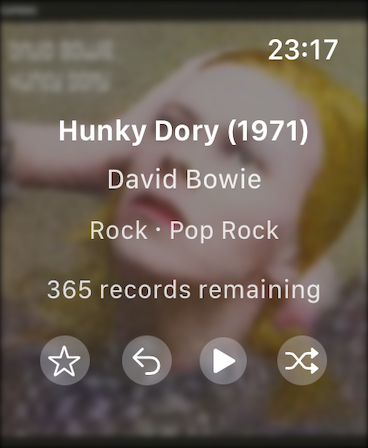
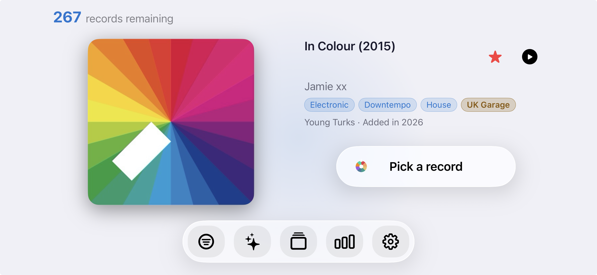
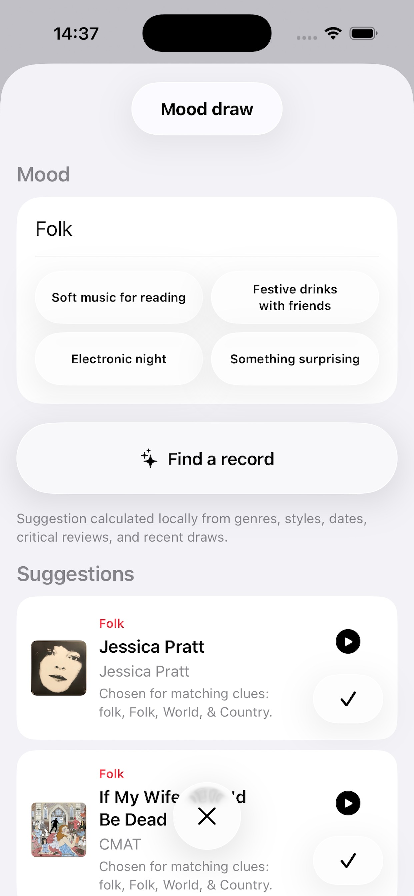
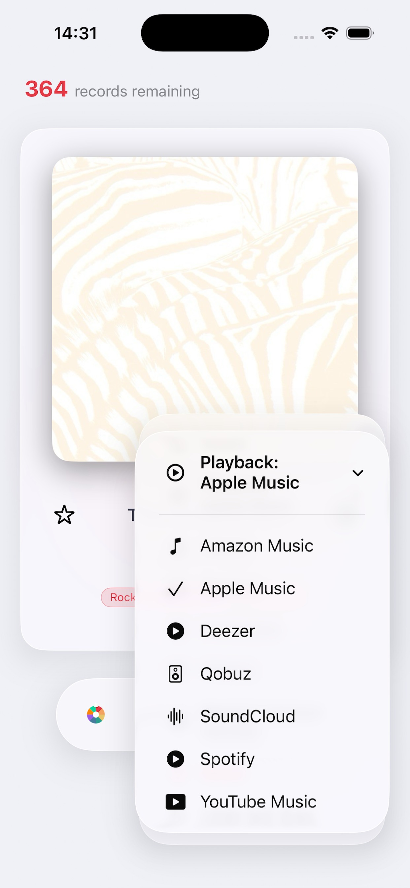

Record Picker brings together fair draw, cover swipes, iPhone landscape selection, enriched cataloging, iCloud, export, 29 languages, and a reimagined Apple Watch app to bring your music collection back to life.
큰 화면 선택

Apple Watch 재설계
The page below presents the main features in version 1.4, from iPhone landscape selection to cover swipes, including Apple Watch, Discogs, iCloud, languages, and privacy.
기능
MusicBrainz와 Discogs의 메타데이터
잘 정리된 컬렉션
공개 데이터베이스가 충분하지 않아도 깔끔하고 확인하기 쉬운 컬렉션을 만들 수 있습니다.
바코드 스캔은 MusicBrainz가 참조를 모를 때 Discogs로 대체되고, Discogs가 발매판을 찾으면 양식이 자동으로 채워집니다.
MusicBrainz와 Discogs의 메타데이터
바코드 스캔은 MusicBrainz가 참조를 모를 때 Discogs로 대체되고, Discogs가 발매판을 찾으면 양식이 자동으로 채워집니다.
보관함과 분리된 위시리스트
중복 감지와 데이터 품질 검사
아트워크와 시각 데이터
아트워크와 시각 데이터
직접 가져오거나 선택한 아트워크로 컬렉션 탐색을 즐겁게 유지하세요.
Cover Art Archive로 아트워크 검색
사진 또는 파일에서 수동 가져오기
아트워크가 없을 때 웹 검색
원본 아트워크 복원
아트워크와 시각 데이터 편집

iPhone 가로 보기 추첨
iPhone landscape selector
Turn iPhone sideways to choose with the cover, metadata, and controls visible at the same time.
Cover on the left and full details on the right
Title, artist, genre tags, format, label, and added-in year visible
Pick button centered next to metadata
Floating bottom toolbar balanced between the cover and screen edge
Statistics reflow into three columns in landscape
큰 화면 선택
공정한 추첨
통제력을 잃지 않고 다음 레코드를 고르며, 무작위성이 컬렉션을 계속 움직이게 합니다.
덜 재생된 레코드를 우선하는 가중 추첨
연도, 장르, 형식, 속도, 즐겨찾기 필터
삭제하지 않고 잠시 제외
Swipe the cover left to draw a new record
Swipe right to undo the last draw, also on iPad
무엇이 자주 돌아오는지 볼 수 있는 기록

분위기별 선택
분위기와 재생
분위기로 선택하고 감상 기록을 남겨 컬렉션이 시간이 지나며 계속 새롭게 보이게 하세요.
사용 가능한 경우 로컬 Apple 모델로 분위기 기반 선택
모델을 사용할 수 없을 때 로컬 메타데이터 기반 매칭
Narrative statistics with on-device Apple Intelligence when available
최근 선택되거나 재생된 레코드 기록
Playback through Apple Music, Spotify, Deezer, YouTube Music, Amazon Music, SoundCloud, Qobuz, and Tidal when available
Apple Watch 추첨
Apple Watch 재설계
커버가 흐릿한 배경으로 표시되고, 즐겨찾기, 마지막 추첨 취소, 다음 추첨 버튼마다 전용 햅틱 피드백이 제공됩니다.
커버가 흐릿한 배경으로 표시되고, 즐겨찾기, 마지막 추첨 취소, 다음 추첨 버튼마다 전용 햅틱 피드백이 제공됩니다.
커버가 흐릿한 배경으로 표시되고, 즐겨찾기, 마지막 추첨 취소, 다음 추첨 버튼마다 전용 햅틱 피드백이 제공됩니다.
커버가 흐릿한 배경으로 표시되고, 즐겨찾기, 마지막 추첨 취소, 다음 추첨 버튼마다 전용 햅틱 피드백이 제공됩니다.
41mm부터 Ultra까지 맞춘 레이아웃
작은 개선: iPad 커버 선택 시트 균형 개선, iPhone-Watch 동기화 속도 향상, 신중한 App Store 리뷰 요청.
데이터 품질
탐색과 컬렉션 인사이트
iPhone과 iPad에 맞춘 별도 인터페이스로 앱을 떠나지 않고 컬렉션을 탐색하고 확인하고 이해할 수 있습니다.
보관함 빠른 탐색
Small red star on every iPhone row and iPad tile to mark or unmark a favorite
통합된 Liquid Glass 버튼
읽기 쉬운 iPad 행과 커버에서 세부 정보로 직접 접근
실제로 도움이 되는 곳의 iPad 드래그 앤 드롭
중복 감지와 데이터 품질 검사
Data quality checks for missing years, added dates, duplicates, labels, artwork, genres, formats, and tracks
Genre, style, and track completion through MusicBrainz and then Discogs
Swipe-to-delete in wishlist and AI Mood history

백업, 가져오기, 내보내기
번거로움 없는 iCloud 동기화
Your data follows your devices through iCloud, without third-party AI providers or cloud AI.
보관함, 위시리스트, 해결된 중복, 제외, 기록, 복원 가능한 삭제, 사용자 지정 커버가 기기를 따라갑니다.
아트워크와 시각 데이터 편집
스프레드시트용 CSV와 깔끔한 JSON을 보관함과 위시리스트별로 분리
필요할 때 전체 백업
타사 AI 제공업체와 클라우드 AI 없이, Apple Intelligence는 기기 안에 머뭅니다
인터넷 리뷰는 자동으로 수집되지 않습니다
29개 언어
29개 언어
Record Picker는 29개 언어를 지원하며, 아랍어, 카탈루냐어, 한국어, 덴마크어, 호주/캐나다/영국 영어, 핀란드어, 캐나다 프랑스어, 히브리어, 힌디어, 인도네시아어, 노르웨이어, 폴란드어, 포르투갈어, 러시아어, 스웨덴어, 터키어가 새로 추가되었습니다.
Record Picker는 29개 언어를 지원하며, 아랍어, 카탈루냐어, 한국어, 덴마크어, 호주/캐나다/영국 영어, 핀란드어, 캐나다 프랑스어, 히브리어, 힌디어, 인도네시아어, 노르웨이어, 폴란드어, 포르투갈어, 러시아어, 스웨덴어, 터키어가 새로 추가되었습니다.
Record Picker는 29개 언어를 지원하며, 아랍어, 카탈루냐어, 한국어, 덴마크어, 호주/캐나다/영국 영어, 핀란드어, 캐나다 프랑스어, 히브리어, 힌디어, 인도네시아어, 노르웨이어, 폴란드어, 포르투갈어, 러시아어, 스웨덴어, 터키어가 새로 추가되었습니다.
Record Picker는 29개 언어를 지원하며, 아랍어, 카탈루냐어, 한국어, 덴마크어, 호주/캐나다/영국 영어, 핀란드어, 캐나다 프랑스어, 히브리어, 힌디어, 인도네시아어, 노르웨이어, 폴란드어, 포르투갈어, 러시아어, 스웨덴어, 터키어가 새로 추가되었습니다.
Record Picker는 29개 언어를 지원하며, 아랍어, 카탈루냐어, 한국어, 덴마크어, 호주/캐나다/영국 영어, 핀란드어, 캐나다 프랑스어, 히브리어, 힌디어, 인도네시아어, 노르웨이어, 폴란드어, 포르투갈어, 러시아어, 스웨덴어, 터키어가 새로 추가되었습니다.
아랍어, 히브리어, 힌디어, 일본어, 한국어, 중국어 간체와 번체
App Store 기록
v1.4
iPhone landscape, cover swipes, and faster favorites
June 23, 2026
iPhone landscape selector: turn the phone sideways to see the cover on the left and full record details on the right, including title, artist, genre tags, format, label, and added-in year.
The Pick button stays centered next to the metadata, while the bottom toolbar floats equidistantly between the cover and the screen edge.
Swipe the album cover from right to left to draw a new record, or left to right to undo the last draw. Tap still opens details, long-press still excludes, and it works on iPad too.
In the record crate, the Favorite chip is replaced by a small red star on every iPhone row and every iPad grid tile: one tap to mark, one tap to unmark.
Statistics get denser in landscape: on iPhone, tiles reflow into three columns, matching the iPad density.
Cleaner swipes everywhere: swipe-to-delete is back on the wishlist and added to AI Mood history; old cross-screen swipes that fought row-level deletions have been retired.
v1.3
Apple Watch 재설계, Discogs 대체 검색, 29개 언어
2026년 6월 22일
커버가 흐릿한 배경으로 표시되고, 즐겨찾기, 마지막 추첨 취소, 다음 추첨 버튼마다 전용 햅틱 피드백이 제공됩니다.
41mm부터 Ultra까지 맞춘 레이아웃
바코드 스캔은 MusicBrainz가 참조를 모를 때 Discogs로 대체되고, Discogs가 발매판을 찾으면 양식이 자동으로 채워집니다.
Record Picker는 29개 언어를 지원하며, 아랍어, 카탈루냐어, 한국어, 덴마크어, 호주/캐나다/영국 영어, 핀란드어, 캐나다 프랑스어, 히브리어, 힌디어, 인도네시아어, 노르웨이어, 폴란드어, 포르투갈어, 러시아어, 스웨덴어, 터키어가 새로 추가되었습니다.
작은 개선: iPad 커버 선택 시트 균형 개선, iPhone-Watch 동기화 속도 향상, 신중한 App Store 리뷰 요청.
v1.2
카탈로그, 스마트 선택, Apple Watch 컴패니언
2026년 6월 18일
가져오기, 수동 앨범 입력, 바코드 스캔을 위한 완전한 음악 컬렉션 카탈로그.
애니메이션 무작위 선택, 연도 필터, 즐겨찾기, 임시 제외, 감상 기록, 컬렉션 통계.
가능한 경우 로컬 Apple 모델로 분위기 기반 선택을 하고, 그렇지 않으면 컬렉션 메타데이터로 기기 내 매칭을 합니다.
MusicBrainz 메타데이터 검색, Cover Art Archive 아트워크 또는 수동 아트워크 가져오기, 백업/복원, Siri 단축어, Apple Watch 연동.
컬렉션은 로컬에 저장되며, 메타데이터와 아트워크 검색은 사용자가 시작할 때만 실행됩니다.
v1.1.1
App Store 개선
2026년 6월 17일
더 부드러운 경험을 위해 인터페이스와 내부 기반을 다듬었습니다.
iPad 지원을 개선했습니다.
비평 리뷰를 더 잘 활용한 분위기 기반 선택.
데이터 품질: 레코드 상세 시트, 수동 행 삭제, Discogs/MusicBrainz 검색.